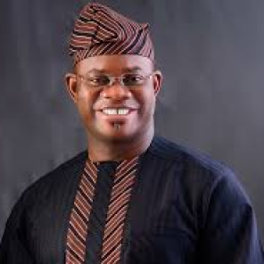

Peter Obi

Peter Gregory Obi (born on the 19th of July 1961) is a Nigerian politician and businessman. He was the vice presidential candidate in the 2019 Nigerian general election under the People's Democratic Party and the former governor of Anambra State.
He attended Lagos Business School, Nigeria where he did his chief executive program; Harvard Business School, Boston, USA, where he did two programs. He has also studied at London School of Economics, Columbia Southwest School, New York, USA, Institute for Management Development, Switzerland just to name a few.
Obi was chairman of Next International Nigeria Ltd and then the chairman and director of Guardian Express Mortgage Bank Ltd, Guardian Express Bank Plc, Future View Securities Ltd, Paymaster Nigeria Ltd, Chams Nigeria Ltd, Data Corp Ltd and Card Centre Ltd.
He is currently the chairman of Nigeria Security and Exchange Commission.
He attended Lagos Business School, Nigeria where he did his chief executive program; Harvard Business School, Boston, USA, where he did two programs. He has also studied at London School of Economics, Columbia Southwest School, New York, USA, Institute for Management Development, Switzerland just to name a few.
Obi was chairman of Next International Nigeria Ltd and then the chairman and director of Guardian Express Mortgage Bank Ltd, Guardian Express Bank Plc, Future View Securities Ltd, Paymaster Nigeria Ltd, Chams Nigeria Ltd, Data Corp Ltd and Card Centre Ltd.
He is currently the chairman of Nigeria Security and Exchange Commission.
Notable Awards
- Sun Newspaper's Man of the Year (2007)
- Thisday Newspaper's Most Prudent Governor in Nigeria (2009)
- Champion Newspaper's Nigeria's Most Trustworthy Governor (2009)
- West Africa ICT Development Award for Governor of the Year (2010)
- Zik Leadership Prize (2011)
- Bill & Melinda Gates Foundation's Best Performing Governor on Immunization in South-East Nigeria (2012)
- Ezeife Leadership Foundation's Leadership and Good Governance Award (2012)
- Methodist Church of Nigeria's Golden Award on Prudence (2012)
- Business Hallmark Newspaper's Man of the Year (2012) Silverbird's Man of the Year (2013)
- The Voice Newspaper's Award for Outstanding Example in Leadership and Governance (2014)
- Champion Newspaper's Most Outstanding Igbo Man of the Decade (2014)
- Nigerian Library Association's Golden Merit Award (2014)
- Catholic Diocese of Onitsha's Golden Jubilee Award (2015)

Yemi osinbajo

Oluyemi Oluleke Osinbajo GCON (born 8 March 1957), is a Nigerian lawyer and politician who is currently serving as the Vice President of Nigeria, since 29th May, 2015.
He studied for his undergraduate degree at the University of Lagos earning a Second Class Honours (Upper Division) Degree in Law. He also won the Graham-Douglas Prize for Commercial Law in Unilag before enrolling at London School of Economics, where he obtained a Master of Laws degree.
Yemi Osibanjo was a senior lecturer & a Professor of Law at the Lagos State University and University of Lagos respectively before he became running mate to the President, Muhammadu Buhari in 2014.
He studied for his undergraduate degree at the University of Lagos earning a Second Class Honours (Upper Division) Degree in Law. He also won the Graham-Douglas Prize for Commercial Law in Unilag before enrolling at London School of Economics, where he obtained a Master of Laws degree.
Yemi Osibanjo was a senior lecturer & a Professor of Law at the Lagos State University and University of Lagos respectively before he became running mate to the President, Muhammadu Buhari in 2014.
Notable Awards
- State Merit Award 1971
- The School Prize for English Oratory, 1972
- Adeoba Prize for English Oratory 1972–1975
- Elias Prize for Best Performance in History (WASC) 1973
- School Prize for Literature (HSC), 1975
- African Statesman Intercollegiate Best Speaker's Prize, 1974
- The Grand Commander of the Order of the Niger, 2015.

Rochas Okorocha

Owelle Rochas Anayo Okorocha (born 22 September 1962) is a Nigerian philanthropist and politician from Imo State. He is the Senator currently representing Imo West Senatorial district at the 9th Nigerian Senate. He was also the Governor of Imo State in 2009.
Rochas Okorocha heads the Rochas Foundation which is a non - governmental, non-profit and charitable organization founded in 1998. It focuses on empowering less privileged children on the streets of Africa through access to quality education through provision of free education scholarships.
Okorocha has competed for a number of offices since vying into politics. He was a presidential nominee for All Nigerians peoples party in 2003..
Rochas Okorocha heads the Rochas Foundation which is a non - governmental, non-profit and charitable organization founded in 1998. It focuses on empowering less privileged children on the streets of Africa through access to quality education through provision of free education scholarships.
Okorocha has competed for a number of offices since vying into politics. He was a presidential nominee for All Nigerians peoples party in 2003..

Donald Duke

Donald Duke (born 30 September 1961 in Calabar) was the Governor of Cross River State, Nigeria from 29 May 1999 to 29 May 2007 and the 2019 Nigeria Presidential candidate for Social Democratic Party, SDP.
He received his LLB degree in 1982 from Ahmadu Bello University, Zaria - Nigeria, the B.L in 1983 from the Nigerian Law School, Lagos and a L.L.M. in Business Law and Admiralty in 1984 from University of Pennsylvania.
Duke received praise for his contributions to the fields of agriculture, urban development, government, environment, information and communication, investment drive, and tourism.
He initiated projects such as Tinapa resort, Obudu Ranch Mountain Race & in 2005, a special reserve fund for the state of Calabar meant to hedge against economic downturn and challenges.
He received his LLB degree in 1982 from Ahmadu Bello University, Zaria - Nigeria, the B.L in 1983 from the Nigerian Law School, Lagos and a L.L.M. in Business Law and Admiralty in 1984 from University of Pennsylvania.
Duke received praise for his contributions to the fields of agriculture, urban development, government, environment, information and communication, investment drive, and tourism.
He initiated projects such as Tinapa resort, Obudu Ranch Mountain Race & in 2005, a special reserve fund for the state of Calabar meant to hedge against economic downturn and challenges.

Yahaya Bello

Yahaya Adoza Bello (born June 18, 1975) is a politician, businessman, and the current Governor of Kogi State.
Bello studied at Kaduna State Polytechnic Zaria in 1995 and obtained an accounting degree from Ahmadu Bello University Zaria in 1999. He further enrolled for a Masters program in Ahmadu Bello University where he obtained a Masters degree in Business Administration (MBA) in 2002. He became a chartered fellow of the Association of National Accountants of Nigeria in 2004.
Bello was declared winner of the 2015 Kogi gubernatorial election after he was chosen on the platform of the All Progressives Congress as the replacement for the late Abubakar Audu who originally won the election but died before the result was declared. On 16 November 2019, Bello was re-elected after he defeated the PDP opposition by over 200,000 votes.
On the 14 of September 2020, he was among a list of politicians placed on visa ban by the state department for undermining democracy in Nigeria. Yahaya Bello is the only Nigerian governor to be born after the Nigerian Civil War, thus, making him the youngest governor in Nigeria
Bello studied at Kaduna State Polytechnic Zaria in 1995 and obtained an accounting degree from Ahmadu Bello University Zaria in 1999. He further enrolled for a Masters program in Ahmadu Bello University where he obtained a Masters degree in Business Administration (MBA) in 2002. He became a chartered fellow of the Association of National Accountants of Nigeria in 2004.
Bello was declared winner of the 2015 Kogi gubernatorial election after he was chosen on the platform of the All Progressives Congress as the replacement for the late Abubakar Audu who originally won the election but died before the result was declared. On 16 November 2019, Bello was re-elected after he defeated the PDP opposition by over 200,000 votes.
On the 14 of September 2020, he was among a list of politicians placed on visa ban by the state department for undermining democracy in Nigeria. Yahaya Bello is the only Nigerian governor to be born after the Nigerian Civil War, thus, making him the youngest governor in Nigeria